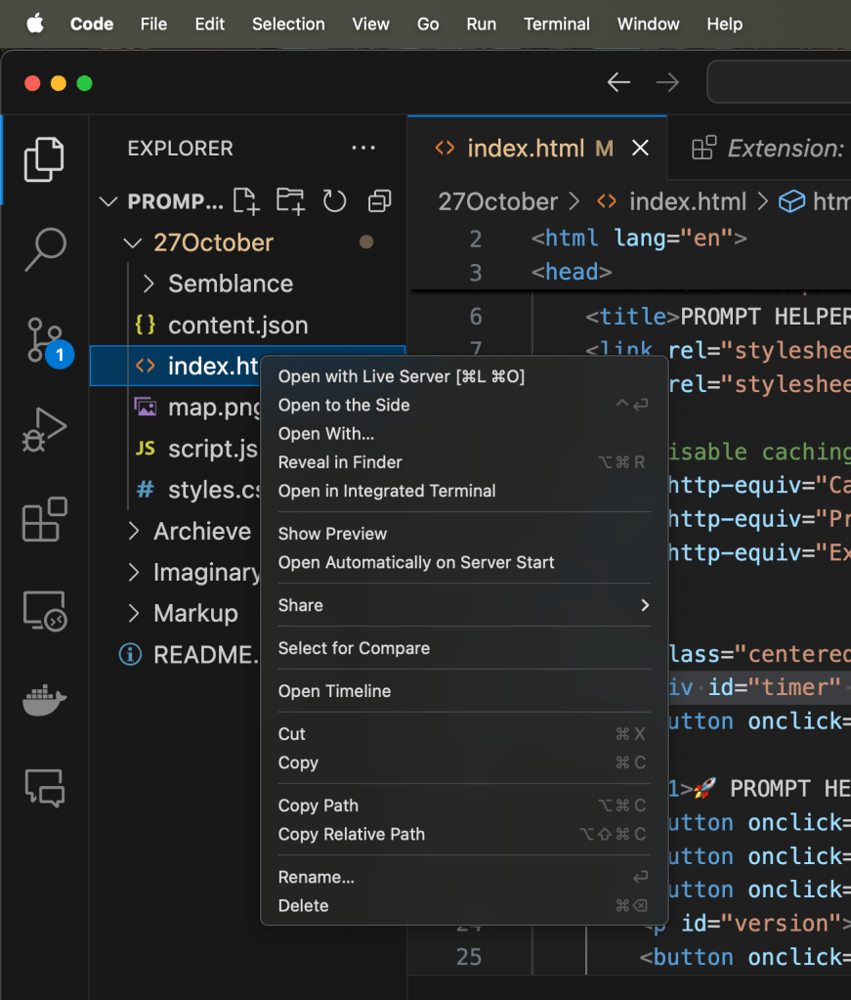

🚀 Boost Your Web Development with VS Code’s Live Server!

🚀 Boost Your Web Development with VS Code’s Live Server!
When it comes to web development, efficiency is key. That’s where the Live Server extension in VS Code comes in handy! This tool enables a “live reload” feature for static & dynamic pages, letting you see changes in real-time as you develop. Below are four powerful use cases for the Live Server feature and tips on how to make the most of it!
🚀 What is Live Server?
Live Server is a VS Code extension that sets up a local development server with a live reload feature. This means any changes you make to your code are automatically reflected in the browser without you needing to refresh. Perfect for HTML, CSS, and JavaScript projects, it saves time and improves productivity!
🌟 Top 4 Use Cases for VS Code's Live Server 🌟
1️⃣ Rapid Frontend Development
-
Scenario: Building or tweaking a webpage layout.
-
Benefit: Instantly view updates to HTML, CSS, or JavaScript, avoiding the hassle of constant manual refreshing.
-
Example: Imagine you’re adjusting a CSS style. With Live Server, as soon as you save, the changes are visible in the browser, helping you spot issues or improvements quickly.
2️⃣ Interactive Prototyping with Designers
-
Scenario: Collaborating on a webpage design where feedback is frequent.
-
Benefit: Allows both developers and designers to visualize changes live.
-
Example: During a design review, you can make tweaks on the spot and see how they affect the layout in real-time, making the collaborative process smoother and more responsive.
3️⃣ JavaScript and AJAX Testing Made Simple
-
Scenario: Working with API calls or interactive JavaScript features.
-
Benefit: Test interactive components without needing to reload pages or backtrack.
-
Example: If you’re developing a feature that fetches data via AJAX, Live Server lets you see results dynamically without needing to refresh, streamlining the process.
4️⃣ Enhanced Learning Experience for Beginners
-
Scenario: Learning web development basics like HTML, CSS, and JavaScript.
-
Benefit: Beginners can instantly see how changes affect their code, helping to reinforce learning.
-
Example: Experimenting with new CSS properties? With Live Server, you get immediate feedback, making it a great tool for learning and experimenting with web technologies.
📸 Setting Up Live Server (Screenshots Included!)
-
Open VS Code ➡️ Click on Extensions (🧩 icon) in the sidebar.
-
Search for “Live Server” ➡️ Install it from the Marketplace.
-
Open Your Project ➡️ Right-click on your HTML file and select Open with Live Server.
-
Watch Changes Live! Make edits to your code, and see them instantly in the browser.
(Feel free to insert screenshots here for each step if you're documenting!)
🛠️ How to Make the Most Out of Live Server
-
Enable Auto Save: Set your VS Code settings to auto-save to instantly reflect your updates.
-
Use Split-Screen: Place your editor and browser side-by-side to observe changes as you code.
-
Combine with Developer Tools: Utilize browser dev tools to inspect elements and further refine your changes.
-
Turn Off Caching: This prevents your browser from holding onto old data, ensuring the latest version is always visible.
🎉 Final Thoughts
VS Code’s Live Server is a game-changer for web developers. Whether you’re creating prototypes, collaborating with designers, testing JavaScript, or just getting started, this extension can accelerate your workflow and enhance productivity. Happy coding!
🔗 Connect with me:
-
💼 LinkedIn: https://www.linkedin.com/in/rifaterdemsahin/
-
🐦 Twitter: https://x.com/rifaterdemsahin
-
🎥 YouTube: https://www.youtube.com/@RifatErdemSahin
-
💻 GitHub: https://github.com/rifaterdemsahin
Imported from rifaterdemsahin.com · 2025